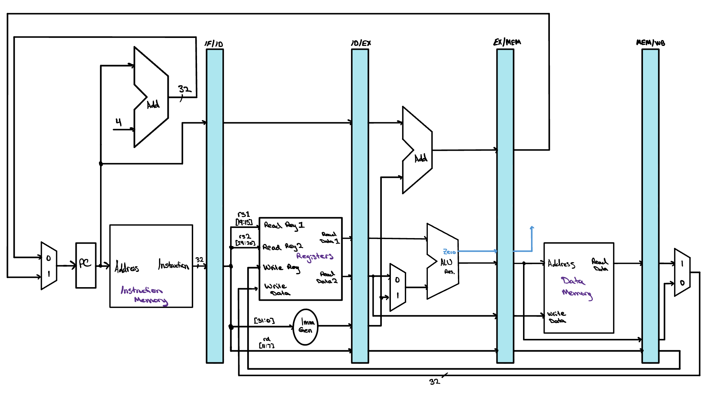
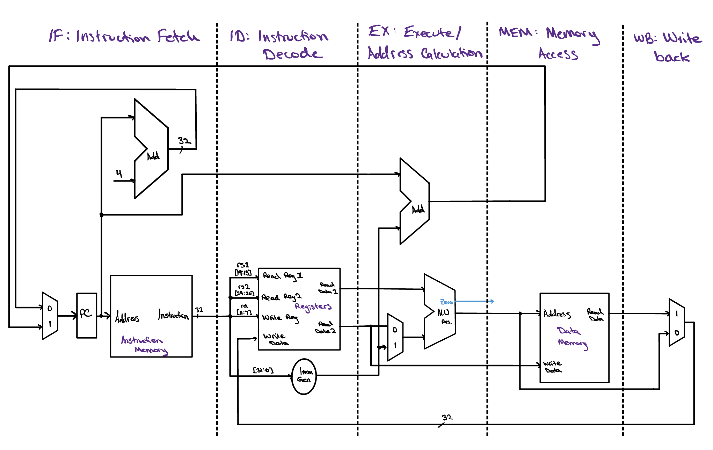
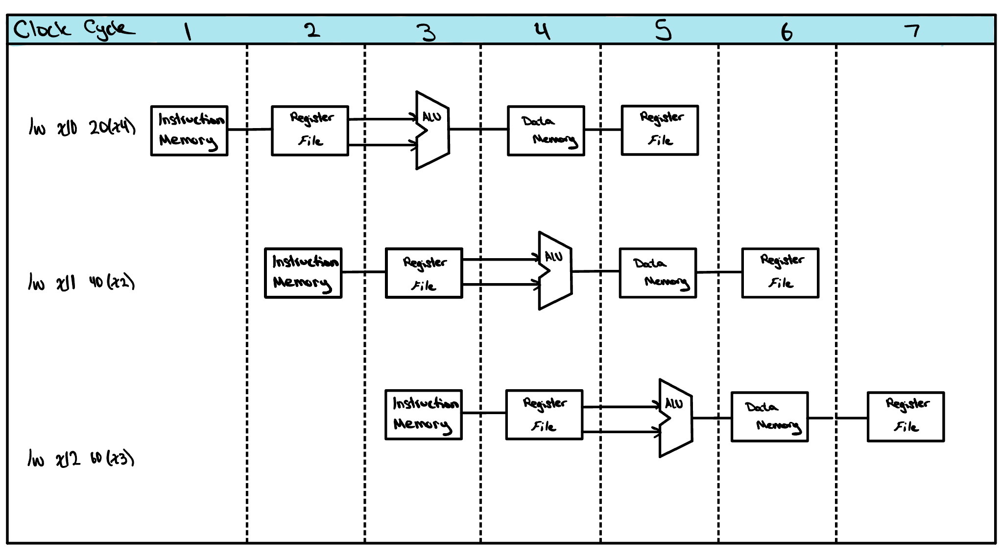

The Pipelined Datapath
The pipelined datapath looks quite similar to the single cycle datapath we learned about before but with a few small changes. In this lesson, we'll learn about how we can transfer data from one instruction through the datapath without stomping on data from other instructions.

Pipeline Registers

It may appear that to perform multiple instructions at the same time we need multiple datapaths. This is a confusing point, and it is a common mistake many people make when learning pipelining for the first time. It makes sense, right? Each instruction has data that is used in all five stages, and this data is vital to the instruction being performed properly. If we start another instruction while the first instruction's data is still working its way through the path, we will overwrite that data before the first instruction has had a chance to finish.
That is where the pipeline register comes into play. A pipeline register's entire job is to hold onto valuable data that will be of use later on in the pipeline in future clock cycles. This way, data can move through the pipeline in a consistent, organized fashion, like items carried along on a conveyor belt. Not only this, but the data will safely make it through each stage without the risk of being overwritten.

Check Yourself
In this pipelined datapath, an instruction reads its operands from the register file during Decode while an earlier instruction may be writing its own result back during the very same clock cycle. How do we make a read and a write to the same register in the same cycle behave correctly?